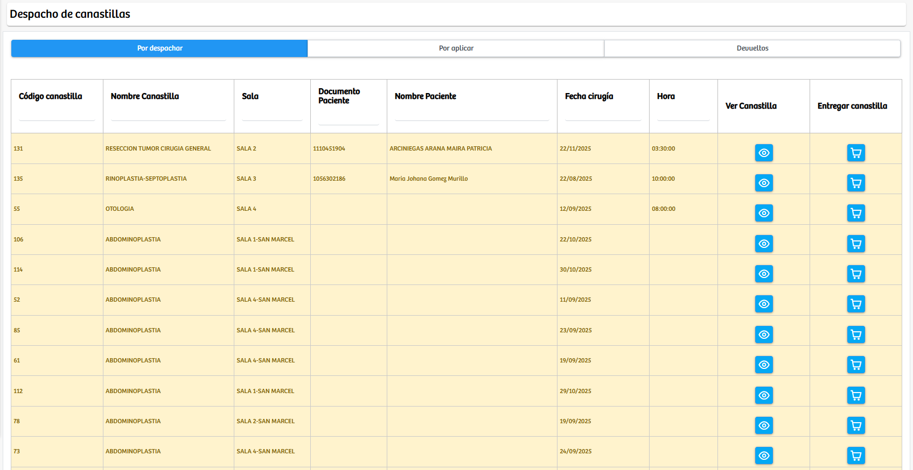
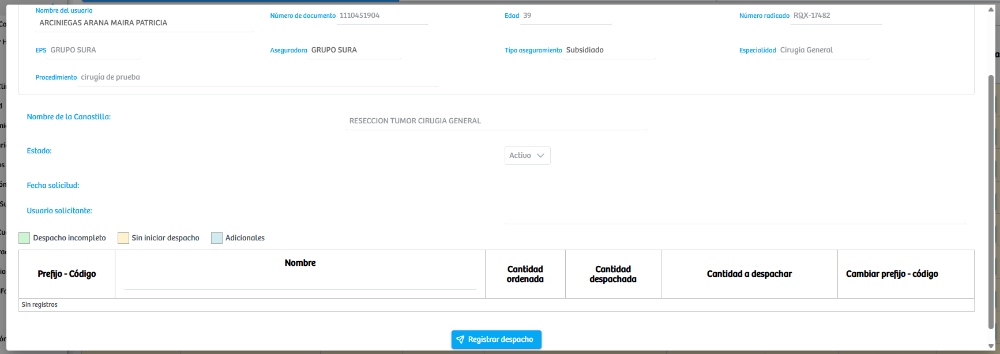
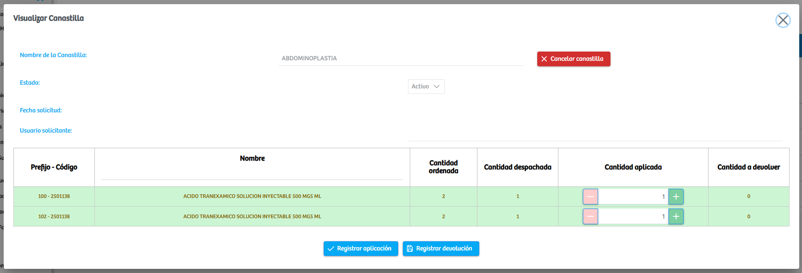
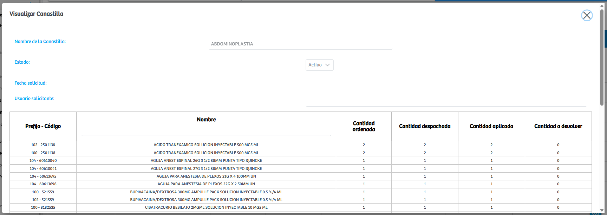

Modulos Sas-Web
Funcionalidades
Canastillas Cirugias
El módulo Canastillas Cirugías permite gestionar todo el ciclo operativo de las canastillas quirúrgicas asociadas a los procedimientos de los pacientes, abarcando desde su despacho inicial, la aplicación de los medicamentos e insumos contenidos en ellas, hasta el control de devoluciones. El módulo se divide en tres secciones principales: Por despachar, Por aplicar y Devueltos, cada una correspondiente a una etapa específica del flujo de gestión. En la vista Por despachar, se listan todas las canastillas solicitadas que aún no han sido entregadas por farmacia. Cada registro cuenta con dos acciones: Ver Canastilla, que muestra en un modal la información clínica del paciente, datos de la solicitud y los medicamentos o insumos incluidos, permitiendo registrar el despacho correspondiente; y Entregar Canastilla, que despliega un resumen de los elementos de la canastilla para confirmar y completar su entrega.
 La sección Por aplicar muestra las canastillas que ya fueron entregadas al área quirúrgica, y que requieren registrar la aplicación real de los medicamentos y materiales utilizados durante el procedimiento. Al seleccionar Ver Canastilla, se abre un modal donde el usuario puede registrar cantidades aplicadas, así como generar devoluciones cuando existan elementos no utilizados, ajustando los consumos de manera precisa y transparente.
Finalmente, en la sección Devueltos, se listan las canastillas que ya fueron procesadas y devueltas a farmacia. Desde aquí, mediante la opción Ver Canastilla, se abre un modal con el detalle completo del proceso: cantidades ordenadas, despachadas, aplicadas y devueltas, proporcionando una trazabilidad total del uso de insumos para fines clínicos, administrativos o de auditoría.
En conjunto, este módulo ofrece un control integral y detallado del ciclo de vida de una canastilla quirúrgica, garantizando precisión en el registro de consumos, devoluciones y entregas, y optimizando la comunicación entre farmacia, quirófano y demás áreas clínicas involucradas.